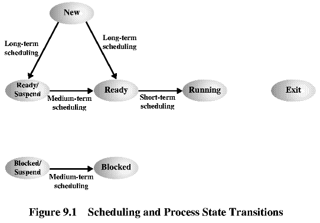
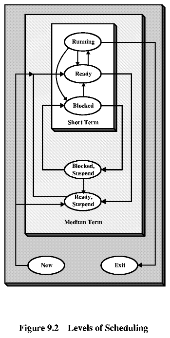
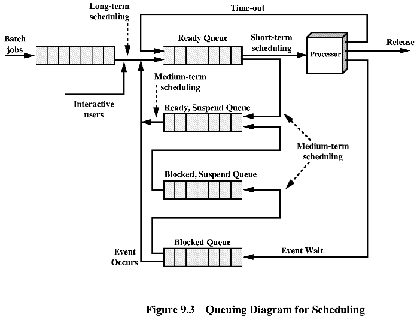
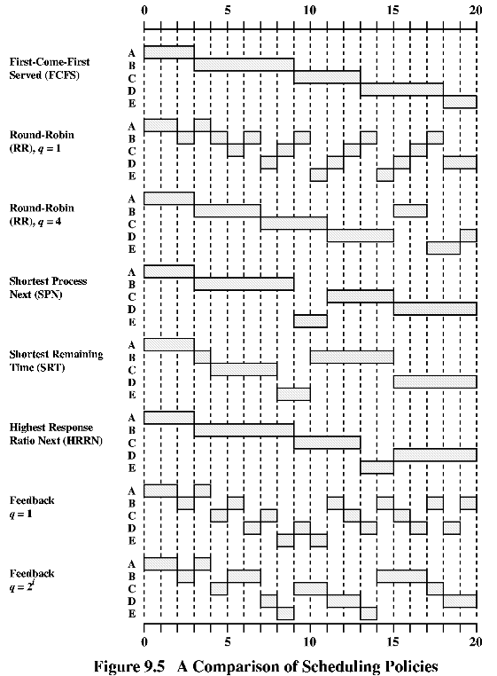
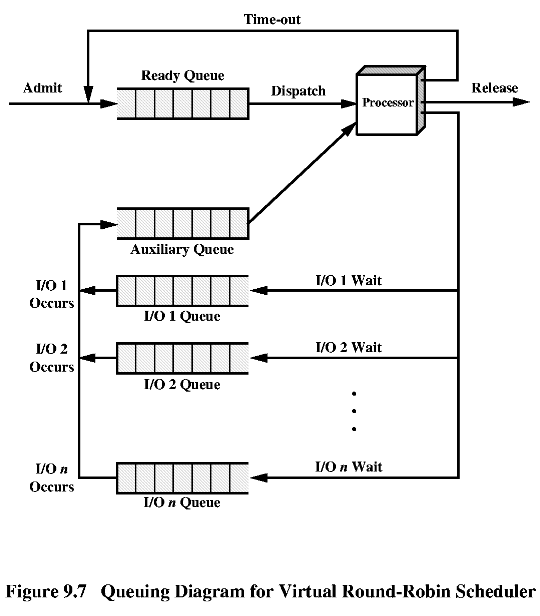
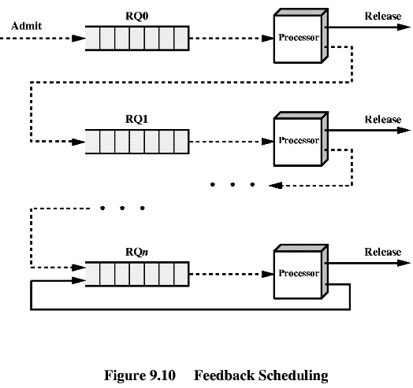

9.1 Типове планирания
| Дългосрочно планиране | Решение да се добави процес към списъка от процеси за изпълнение. |
| Средносрочно планиране | Решение да се добави процес към процесите, които са частично или напълно в паметта. |
| Краткосрочно планиране | Решение кой процес да бъде изпълняван от процесора. |
| I/O планиране | Решение кой процес, чакащ за I/O ресурс, да му бъде даден свободен ресурс. |
|  |  |

** Дългосрочно планиране.
Многопрограмна система - "степен на многопрограмност".
Преобразуване на задание в процес:
- кога да се създаде нов процес?
- кое задание да се преобразува в процес?
** Средносрочно планиране - част от прехвърлящата функция (swaping
function), виртуална памет.
** Краткосрочно планиране - работа на диспечера.
Диспечерът се задейства при следните събития:
- прекъсване на часовника;
- I/O прекъсване;
- извиквания на функции на ОС;
- сигнали.
Пример за група процеси и обслужването им.
|
 |
Сравнение за времената за обслужване на процесите:
| Process
Arrival Time Service Time [Ts] |
1
0 3 |
2
2 6 |
3
4 4 |
4
6 4 |
5
8 2 |
Mean | |
| FCFS | Finish Time
Turnaround Time [Tq] Tq/Ts |
3
3 1.00 |
9
7 1.17 |
13
9 2.25 |
18
12 2.40 |
20
12 6.00 |
8.20 2.56 |
| RR q=1 | Finish Time
Turnaround Time [Tq] Tq/Ts |
4
4 1.33 |
18
16 2.67 |
17
13 3.25 |
20
14 2.80 |
15
7 3.50 |
10.80 2.71 |
| RR q=4 | Finish Time
Turnaround Time [Tq] Tq/Ts |
3
3 1.00 |
17
15 2.50 |
11
7 1.75 |
20
14 2.80 |
19
11 5.50 |
10.00 2.29 |
| SPN | Finish Time
Turnaround Time [Tq] Tq/Ts |
3
3 1.00 |
9
7 1.17 |
15
11 2.75 |
20
14 2.80 |
11
3 1.50 |
7.60 1.84 |
| SRT | Finish Time
Turnaround Time [Tq] Tq/Ts |
3
3 1.00 |
15
1`3 2.17 |
8
4 1.00 |
20
14 2.80 |
10
2 1.00 |
7.20 1.59 |
| HRRN | Finish Time
Turnaround Time [Tq] Tq/Ts |
3
3 1.00 |
9
7 1.17 |
13
9 2.25 |
20
14 2.80 |
15
7 3.50 |
8.00 2.14 |
| FB q=1 | Finish Time
Turnaround Time [Tq] Tq/Ts |
4
4 1.33 |
20
18 3.00 |
16
12 3.00 |
19
13 2.60 |
11
3 1.5 |
10.00 2.29 |
| FB q=2i-1 | Finish Time
Turnaround Time [Tq] Tq/Ts |
4
4 1.33 |
17
15 2.50 |
18
14 3.50 |
20
14 2.80 |
14
6 3.00 |
10.60 2.63 |
Пример за бавно обслужване на къс процес:
| Process | Arrival Time | Service Time (Ts) | Start Time | Finish Time | Turnaround
Time (Tq) |
Tq/Ts |
| A | 0 | 1 | 0 | 1 | 1 | 1.00 |
| B | 1 | 100 | 1 | 101 | 100 | 1.00 |
| C | 2 | 1 | 101 | 102 | 100 | 100.00 |
| D | 3 | 100 | 102 | 202 | 199 | 1.99 |
| Mean | 100 | 26.00 |


| Алгоритми | FCFS | Round Robin | SPN | SRT | HRRN | Feedback |
| Функция за избиране
[selection function] |
max[w] | const | min[s] | min[s-e] | max[(w+s)/s] | -- |
| Режим на изпълнение
[decision mode] |
без прекъсване | прекъсване по време | без прекъсване | прекъсване по нов по-къс процес | без прекъсване | прекъсване по време |
| Производителност
[throughput] |
не е определена | може да е ниска, ако кванта време е малък | висока | висока | висока | не е определена |
| Време за отговор
[response time] |
голямо, ако процесите са с много различно време за изпълнение | осигурява добро време за отговор на късите процеси | осигурява добро време за отговор на късите процеси | осигурява добро време за отговор | осигурява добро време за отговор | не е определено |
| Припокриване
[overload] |
минимално | малко | голямо | голямо | голямо | голямо |
| Ефект върху процеса
[effect on processes] |
глоба за къси процеси и за I/O процеси | честно | глоба за дълги процеси | глоба за дълги процеси | добър баланс | благосклонен към I/O процеси |
| Гладна смърт
[starvation] |
не | не | възможна | възможна | не | възможна |
w - общо време за работа на процеса
e - време за изпълнение
s - общо време за обслужване на процеса